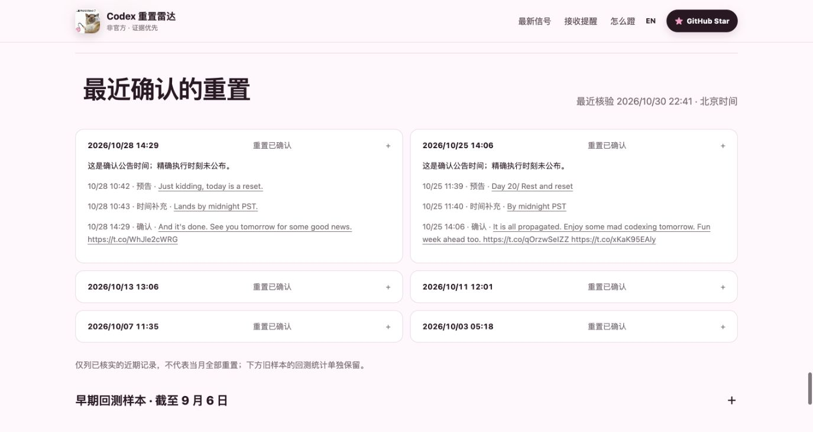
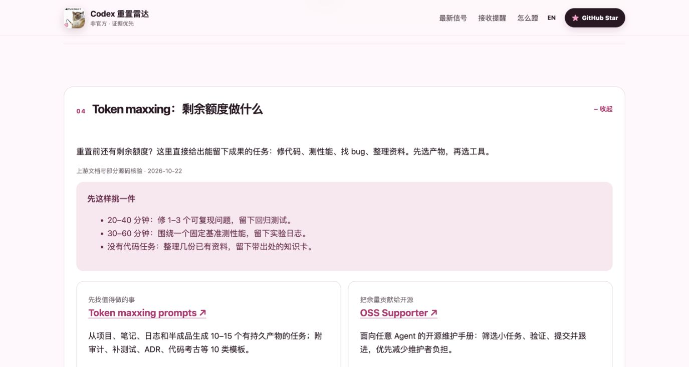

分清预告与确认
把公告和后续完成回复放在一起，时间与原帖都能回看。
把公告和后续完成回复放在一起，时间与原帖都能回看。
通过钉钉接收新动态，也可使用你自己的 RSS 阅读器。
从代码维护、调研与开源贡献中，选一个能验收的任务。



公开信息进入 Cloudflare，规则与 AI 复核消息含义，D1 留下证据与投递记录，最终呈现在网页、RSS 和钉钉。
 放大查看架构图 ↗
放大查看架构图 ↗手机可在大图中左右滑动查看，也可打开 SVG 缩放。
规则筛选，AI 做原文语义复核；沿真实引用关系核验后续确认。
D1 保存原帖、事件和投递状态。确认公告时间与精确执行时刻分开。
网页、RSS 与钉钉各有明确入口；发送去重，保留异常与未知状态。
图中只展示当前部署。Dot → Codex 自动开工尚未启用；公开确认不能证明每个账号同步到账。
原创 SVG 参考 C4 容器图的系统边界、职责与通信标注，以及 OpenAI 工程博客的简洁流程表达。未复制原图，也不表示本项目使用了同一 Codex 架构。
由真实页面截图与架构图组成的介绍短片，无音频；不是自动任务执行录屏。
页面截图采集于2026-10-30至10-31，架构图更新于2026-10-31。所有画面来自真实产品，不展示私人账号数据。比赛拉票帖单独准备，投票入口尚待补充。